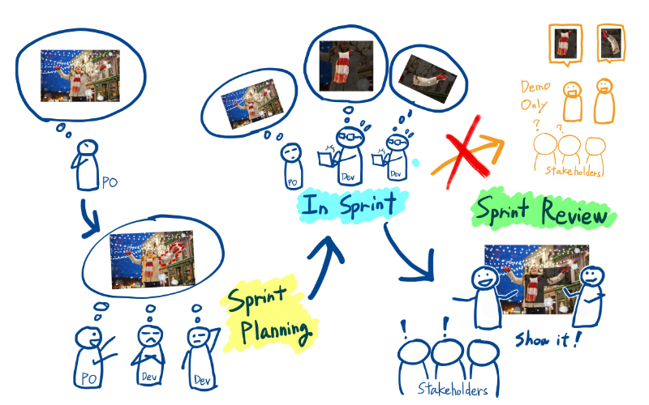
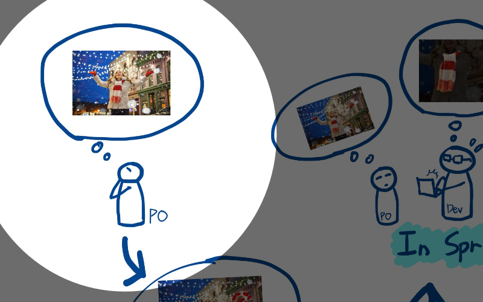
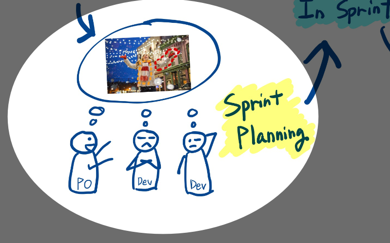
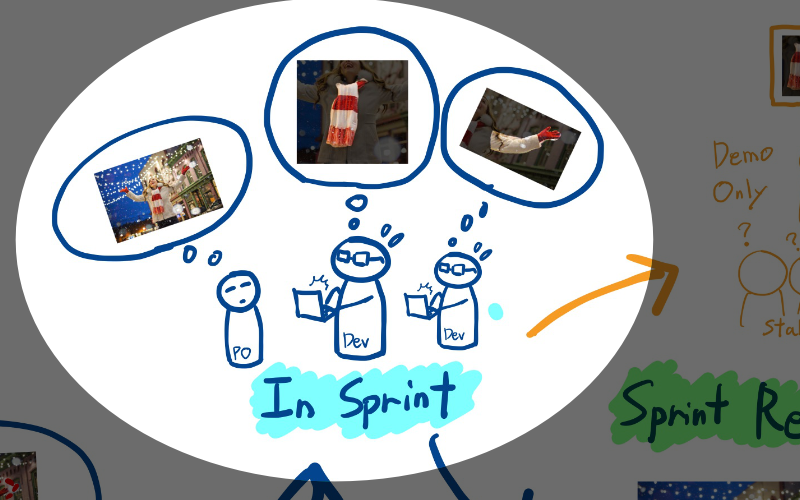
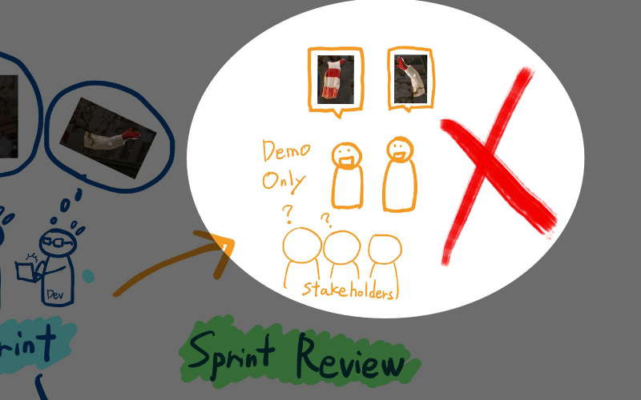
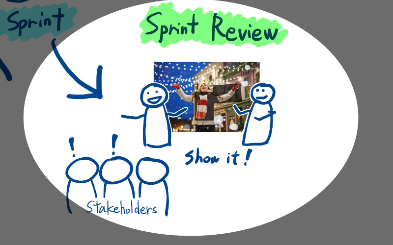
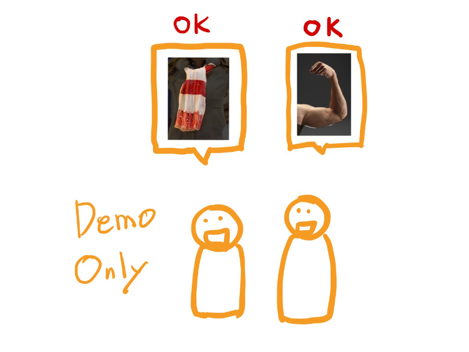
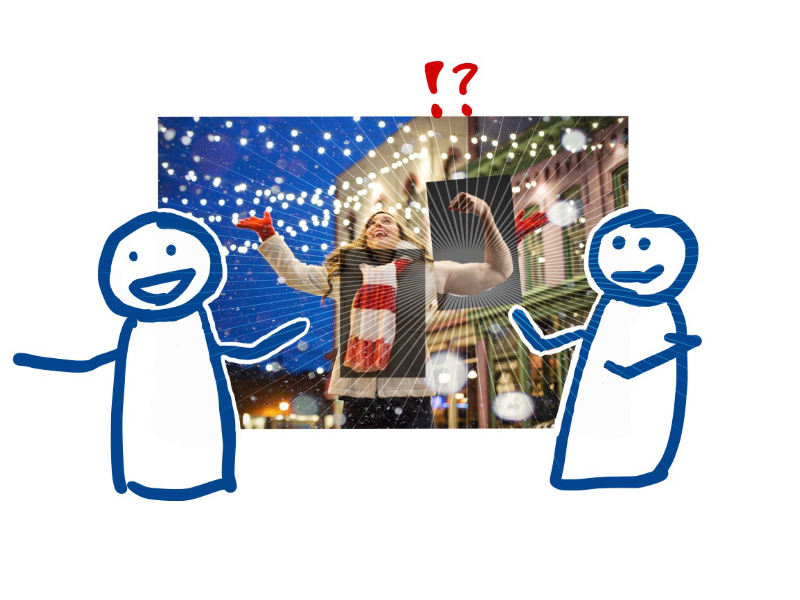

スプリントレビューでをコンテキスト保持することの大事さ
アジャイルコーチングの仕事で、支援先のチームがスプリントレビューがうまくいってない時のよくあるパターンがあるので、メモを残しておこうと思いました。
ここでのうまく出来ているの定義は、ステークホルダーから意味のある批評が出ており、スプリントレビューをやる意義をチーム全員が感じている状態とします。
コンテキストを保持する
Good : コンテキストを共有してから、デモを見せる。
Bad : ただ個別の機能を見せるデモをする。
気をつける点はスプリントレビュー時にプロダクトバックログアイテムのコンテキストをきちんとステークホルダーと共有することです。ただそれだけなのですが、意外とやってないチームが多い気がします。

コンテキストはどこからくるか？
ではそのコンテキストはどこからくるのか？プロダクトバックログアイテムがインクリメントになる過程からそれを見てみたいと思います。

まず最初にPOがプロダクトバックログアイテムのアイディアを思いつきます。 それを何らかの形にして（大体はユーザーストーリーの形で）プロダクトバックログに置きます。コンテキストはプロダクトオーナーの頭の中にあります。
Sprint Planning
それをプロダクトバックログアイテムはスプリントプランニングで共有されます。
チームはプロダクトバックログアイテムを見ながら、どのようにそれを実現するのかを考えます。プロダクトオーナーはコンテキストを共有し、開発者は実装箇所を考え、どういった作業を行うのかを考えていきます。

In Sprint
スプリント内でそのアイディアを作り上げます。チームは一旦コンテキストの事は忘れ、実装に没頭します。 モブで作ったりペアで作ることでコンテキストを維持しやすくなりますが、それはまた別のお話。

Sprint Review
最後にチームはスプリントレビューでそれを見せます。
ここでコンテキストを保持し続けられるかがポイントになります。保持出来ていないと、実装した機能を一つ一つ、個別に見せるようなデモしてしまいます。

そうではなくて、コンテキストをステークホルダーと共有し、実装した機能にストーリーを持たせて紹介しましょう。
この図だと
「マフラーを作ってきました」ではなく、
「クリスマスシーズンに外でお出かけをするためのマフラーを作ってきました」にしましょう

なぜ？
なぜ、コンテキストを共有しないと、うまくいかないのか？それぞれ個別の機能をレビューしてもうまくいってるよ！という人もいると思います。それは単にステークホルダー側がコンテキストを維持出来ているだけかもしれません。チーム側の協力が合ったほうがより良いかもしれませんね。
また個別の機能の評価・批評で問題ないと思う人もいるかも知れません。でもコンテキストを忘れた状態での評価批評はちょっと危ないかもしれませんね。
例えば、個別の機能として問題ないものでも、

コンテキストと合わせてみたら変ってこともありますからね!

では！